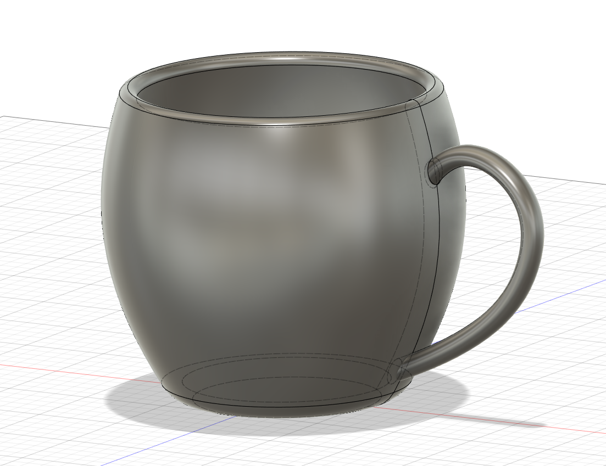
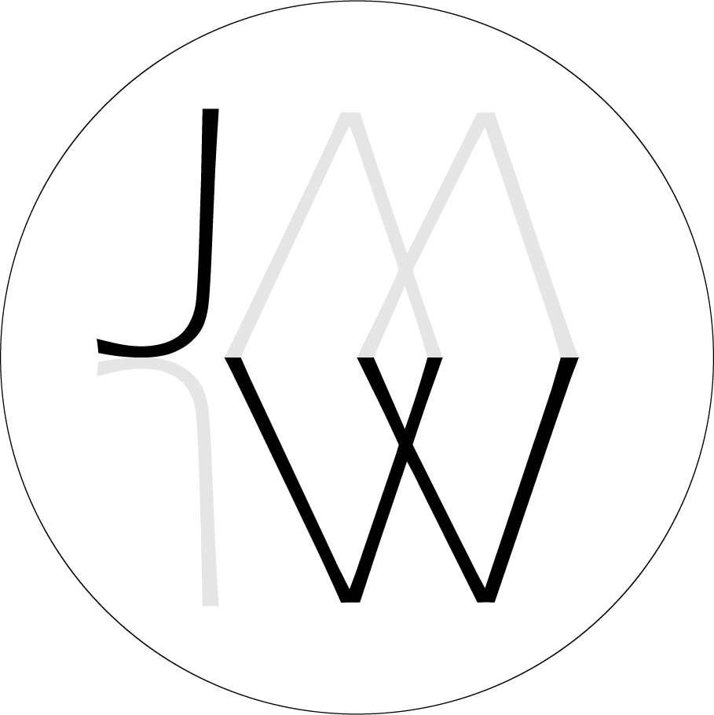

Prosjekt 1
I det første prosjektet skulle vi lage en repository på GitHub, der det skulle være mapper for nettside og prosjekter. Jeg lasta ned GitHub Desktop og Atom for å jobbe med HTML
Først starta jeg med å lage mappene "Docs" og "Prosjekter". Deretter lasta jeg ned "Prologue" temaet/template fra html5up for å basere nettsiden min på.
Jeg la da inn alle filene i fra "prolouge.zip" jeg lasta ned inn i "docs" mappa i repositoryet mitt.
"Index.html" var templaten og jeg begynte å leke meg litt rundt med kodinga siden jeg ikke har koda før. Det tok litt tid før jeg forsto hva ting gjorde, men når jeg først fikk det til så gikk det helt greit. Jeg begynte så med å redigere tekst, bilder og linker så den fungerte som jeg ville. Bildene av meg som jeg bruker er tatt av en venn. Når jeg følte meg fornøyd med første siden så kopierte jeg "index.html" og ga den nye HTML fila navnet "Prosjekter.html" for å lage en side for alle prosjektene jeg skal ha fremover. Og er den siden du ser på nå.
For å sørge for at ting ikke ble feil, så brukte jeg commit og push origin i GitHub Desktop ofte. Da fikk jeg hele tiden se endringer og eventuelle feil jeg måtte rette opp i.
Prosjekt 2
I oppgave 2 skulle vi designe ett 3D objekt i Fusion360 av Autodesk
Det første jeg gjorde var å finne ut av hva jeg ville lage. Jeg var litt usikker på starten hva jeg ville lage siden jeg ville lage noe som ikke var altfor mye, men samtidig noe som jeg kunne få brukt for. Det endte i at jeg laga en enkel kopp med håndtak.

Etter jeg hadde designa koppen så skulle jeg lage ett klistremerke. Dette brukte jeg Adobe Illustrator til. Klistremerket kan brukes til flere ting, f.eks. koppen. Jeg laga rett og slett en logo ut av initialene mine "JW"

...Prosjekt 3